Cover
9th Apr, 2026
AP Calculus AB Quick Review Notes
25-26
Man Kit Cheung
9th Apr, 2026
25-26
Man Kit Cheung
| If limit from the lift ≠ right / limit = infinity —-> limit does not exist (DNE) |
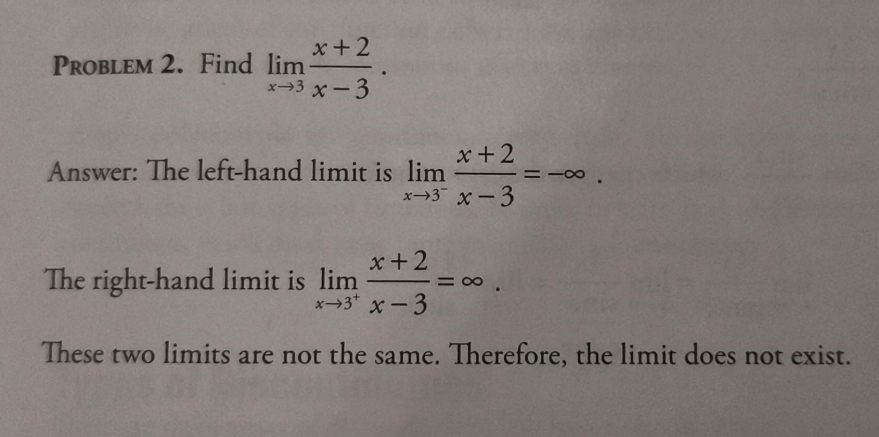 When limit = infinity —-> find right hand and left hand limit to see if they are identical |
| Jump discontinuity | 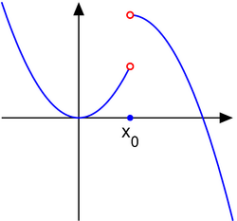 |
|---|---|
| Infinite discontinuity (asymptote) | 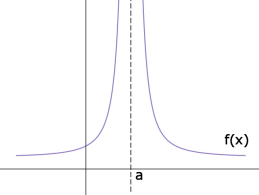 |
| Removable discontinuity | 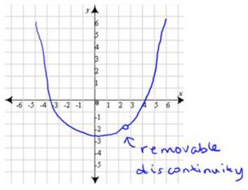 |
| Must meet the following 3 conditions: 1. f(c) exists 2. lim f(x) exists x->0 3. lim f(x) = f(c) x->0 |
| Vertical asymptotes | Denominator = 0 |
|---|---|
| Horizontal asymptotes | 1. Highest power at numerator = no horizontal asymptote 2. Highest power at denominator = horizontal asymptote at y=0 3. Same power → y = coefficient of highest power in numerator / same in denominator |
| Evaluate limit with Squeeze Theorem | Evaluate lim xsin(1/x) x->0 0 ≤ sin(1/x) ≤ 1 0 ≤ xsin(1/x) ≤ x lim 0 = 0 lim x = 0 x->0 x->0 So lim xsin(1/x) = 0 according to Squeeze Theorem x->0 |
|---|---|
| Special cases | 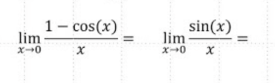 These are equal to 0 |
| If f(x) continuous on [a,b] and C is a number between f(a) and f(b) There is at least one number x in [a,b] that f(x) = C |
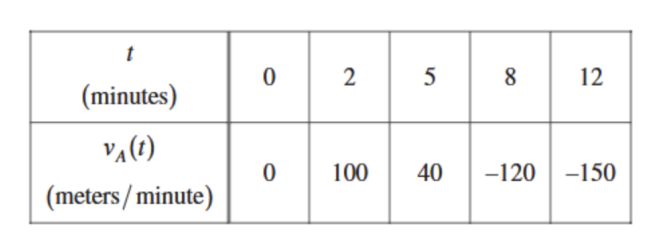 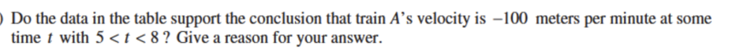 -100 is intermediate to -120 and 40, function is differentiable, so it is also continuous on the interval, so there is a t value in between 5 to 8 that has the value of -100 |
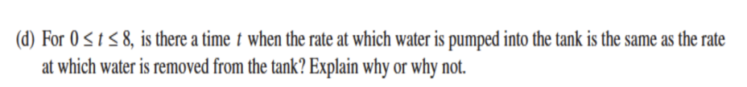 Same rate A’(t) = W(t) - R(t) W(t) - R(t) = 0 A’(t) is differentiable and continuous Find A’(0) & A’(8), see whether they have different signs (pass through 0), if they pass through, implies there is a number 0 intermediate to A’(0) and A’(8) |
| Two-sided limits | Compare the limits from the left and right. A finite two-sided limit exists only when both one-sided limits approach the same finite number. If both diverge with the same sign, report an infinite limit and distinguish it from a finite limit. |
|---|---|
| Continuity at c | Check that f(c) exists and that the limit as x → c equals f(c). For rational functions, simplify common factors before classifying a denominator zero as a removable hole or a vertical asymptote. |
| Squeeze example | For all x ≠ 0, |x sin(1/x)| ≤ |x|. Since both −|x| and |x| approach 0, the middle expression approaches 0. |
| Average rate of change → slope 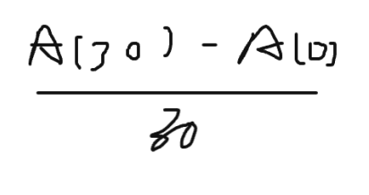 |
| At a point | f′(a) = lim as h → 0 of [f(a+h) − f(a)]/h, when the limit exists. A secant slope estimates the tangent slope when its endpoints are close. Differentiability implies continuity; a continuous function can still have a corner, cusp, or vertical tangent. |
|---|---|
| Common rules | Differentiate powers with (xⁿ)′ = nxⁿ⁻¹. Constants differentiate to zero and sums differentiate term by term. Use (fg)′ = f′g + fg′ and (f/g)′ = (f′g − fg′)/g² where g ≠ 0. |
| Common functions | (eˣ)′ = eˣ; (ln x)′ = 1/x for x > 0; (sin x)′ = cos x; (cos x)′ = −sin x; (tan x)′ = sec²x where defined. |
| Chain rule | (f(g(x)))′ = f′(g(x))g′(x). Work from the outside in and multiply by each inner derivative. |
|---|---|
| Implicit differentiation | Differentiate both sides with respect to x, using the chain rule on terms that contain y. For x² + y² = 25, 2x + 2yy′ = 0, so y′ = −x/y when y ≠ 0. Differentiate again for a second derivative. |
| Inverse functions | If f(a) = b and f′(a) ≠ 0, then (f⁻¹)′(b) = 1/f′(a). For example, (arcsin x)′ = 1/√(1 − x²) for −1 < x < 1. |
| If the limits are in forms of these indeterminate: 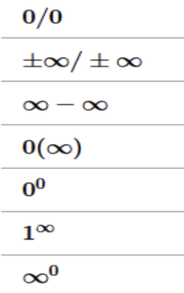 Use L’hospital’s Rule |
| Motion | For position s(t), velocity is s′(t), speed is |s′(t)|, and acceleration is s″(t). Speed increases when velocity and acceleration have the same sign. |
|---|---|
| Interpretation | A derivative’s units are output units per input unit. Its sign gives the direction of change; its magnitude gives the instantaneous rate. |
| Procedure | Write an equation relating the changing quantities. Differentiate with respect to time before substituting instantaneous measurements. Solve for the requested rate and include units and sign. |
|---|---|
| Example | For a circle A = πr², dA/dt = 2πr·dr/dt. At r = 3 cm as r grows at 2 cm/s, area increases at 12π cm²/s. |
| Linearization | Near a, f(x) ≈ f(a) + f′(a)(x − a). A tangent line lies below a concave-up graph and above a concave-down graph on an interval of consistent concavity. |
|---|---|
| L’Hôpital check | Use the rule for indeterminate quotients of type 0/0 or ∞/∞ when its hypotheses hold. Differentiate numerator and denominator separately, then evaluate the new limit. Rewrite other indeterminate forms as appropriate before applying it. |
| If f(x) continuous in [a,b] and differentiable on (a,b) There is a number C between (a,b) that [f(a) - f(b)] / (a - b) = f’(C) Derivative of f(C) |
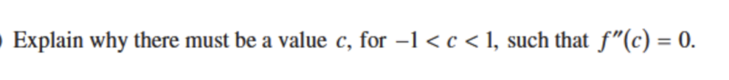 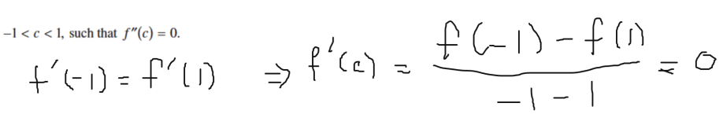 Derivative = slope of the interval, only if the derivative of 2 end points are identical |
| If f(x) is continuous on (a,b) f(x) has at least 1 minimum value and at least 1 maximum value on [a,b] |
| Maximum/minimum of function occurs when: - f’(x) = 0 - f’(x) = DNE |
| Absolute maximum/minimum can occur at end points as well |
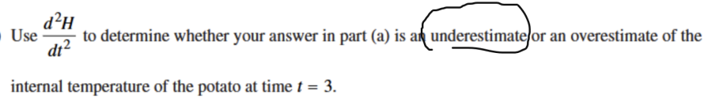 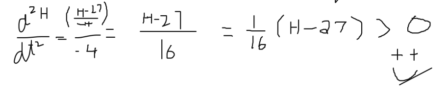 Find second derivative and see if it’s positive of negative f’’(x) < 0 = concave down, overestimate f’’(x) > 0 = concave upwards, underestimate |
| Theorem conditions | For the Extreme Value Theorem, f must be continuous on the closed interval [a,b]. For the Mean Value Theorem, f must be continuous on [a,b] and differentiable on (a,b). The conclusion is f′(c) = [f(b) − f(a)]/(b − a) for some interior c; endpoint derivatives need not match. |
|---|---|
| First derivative | f increases where f′ > 0 and decreases where f′ < 0. A + to − change in f′ gives a local maximum; − to + gives a local minimum. Check interior critical points and endpoints for absolute extrema on a closed interval. |
| Second derivative | At a critical point with f′(c) = 0, f″(c) > 0 gives a local minimum and f″(c) < 0 gives a local maximum. If f″(c) = 0, the test is inconclusive. An inflection point requires a change in concavity. |
| 1. Divide [a,b] into n subintervals → ∆x = (b-a)/n 2. Find midpoint of each subinterval using midpoint theorem 3. Find value of function t each midpoints as the height of rectangles 4. Sum up all the results |
| From sums to integrals | A definite integral is a limit of Riemann sums. It is signed accumulation, with area below the axis counted negatively. Left, right, midpoint, and trapezoid sums estimate it using the stated interval widths. |
|---|---|
| Fundamental theorem | If F′ = f and f is continuous on [a,b], then ∫ₐᵇ f(x) dx = F(b) − F(a). If A(x) = ∫ₐˣ f(t) dt, then A′(x) = f(x). For a variable upper bound g(x), multiply by g′(x); subtract the corresponding term for a variable lower bound. |
| Antiderivatives | An indefinite integral includes + C. For n ≠ −1, ∫xⁿ dx = xⁿ⁺¹/(n+1) + C; ∫(1/x) dx = ln|x| + C. For substitution, set u to an inside expression and convert both the differential and any integration bounds. |
| Model | A differential equation relates a quantity to one or more derivatives. For example, dy/dt = ky models a rate proportional to the current amount. |
|---|---|
| Verify a solution | Differentiate the proposed function and substitute into both sides. For a particular solution, also check the initial condition and domain. |
| Slope field | At each point (x,y), draw a short segment whose slope is the value given by dy/dx. A solution curve is tangent to the local segments and passes through any specified initial point. |
|---|---|
| Equilibrium | For an autonomous equation dy/dx = f(y), any level y = c with f(c) = 0 gives a constant solution. Use the signs above and below an equilibrium to predict whether nearby solutions approach or move away from it. |
| Separate and integrate | For dy/dx = g(x)h(y), rearrange to dy/h(y) = g(x) dx where h(y) ≠ 0. Integrate both sides, then solve for y if possible. Check separately for constant solutions lost by division. |
|---|---|
| Particular solution | Use the specified initial condition to determine C and select the appropriate branch. Check the solution by substitution. |
| Proportional rates | For dy/dt = ky and y(0) = y₀, y(t) = y₀eᵏᵗ. Positive k gives growth and negative k gives decay. For growth, doubling time is ln 2/k; for decay, half-life is ln 2/|k|. |
|---|
| Average amount = average value of function 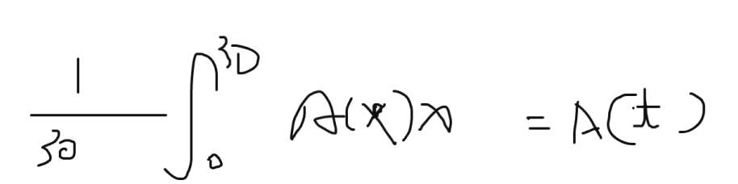 |
| ∫ (Upper curve - Curve) dx Definite integral |
| π∫ [R^2 - r^2]dx If revolve to y = k, k is constant Then use dx Vice versa |
| Average value and motion | Average value is [1/(b − a)]∫ₐᵇ f(x) dx. Integrate velocity for displacement and speed for total distance. Final amount equals initial amount plus the integral of its net rate of change. |
|---|---|
| Area between curves | Integrate top minus bottom using vertical slices, or right minus left using horizontal slices. Split the interval wherever the ordering changes. |
| Volumes | Integrate cross-sectional area. With square side s the area is s²; with a semicircle of diameter s it is πs²/8. For rotation, washers use π(R² − r²), with radii measured from the actual axis. A disk is a washer with inner radius zero. |
| Linear approximation | Equation of line of tangent 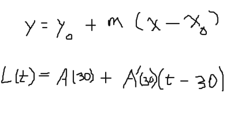 |
|---|---|
| Estimation | Overestimate: when the graph is concave up f’’(x) > 0 Underestimate: when the graph is concave down f’’(x) < 0 |
| Rates | 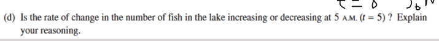 Rate of change increasing / decreasing = second derivative |
| Separation of variables | Solve the differential equation 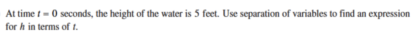 |